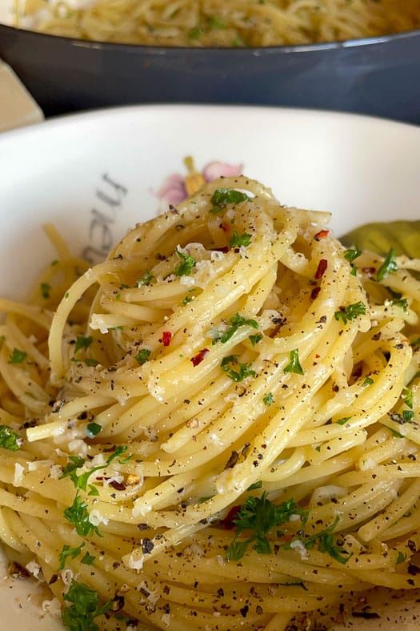

Home
Aglio e Olio Pasta

Description
This recipe is about making an Aglio e Olio pasta.
This easy recipe will give you a flavorful dish that you and your loved ones will enjoy!
Ingredients
- 1/2 bunch - Fresh parsley
- 5 - Garlic cloves
- 5-6 tablespoons - Extra virgin olive oil
- 300g - Spaghetti pasta
- 1 tablespoon - Salt
- Parmesan cheese to taste
- Red pepper flakes to tasta
- Salt and pepper to taste
Steps:
- Cut half a bunch of fresh parsley starting from the stems and stop when approaching the leaves. Set stems aside and cut the leaves. Reserve the leaves
- Cut the garlic cloves in very small parts.
- Grab a pot, add water and turn on the stove heat. When the water starts boiling, add the tablespoon of salt and afterwards add the pasta. Cook the spaghetti a minute less than indicated in the packaging and stir frequently.
- Remove the pasta from the water, reserve it, and get some of the pasta water for later.
- Heat up a pan (medium-low heat), add extra virgin olive oil. Add the chopped garlic cloves and parsley stems.
- After a few minutes, add the boiled pasta and some of the pasta water. Mix frequently.
- Add the parsley leaves and a little bit of pasta water. Cook for about a minute.
- (Optional) Add red pepper flakes.
- Turn heat off and serve pasta with parmesan cheese, salt and pepper to taste.
Other recipes: